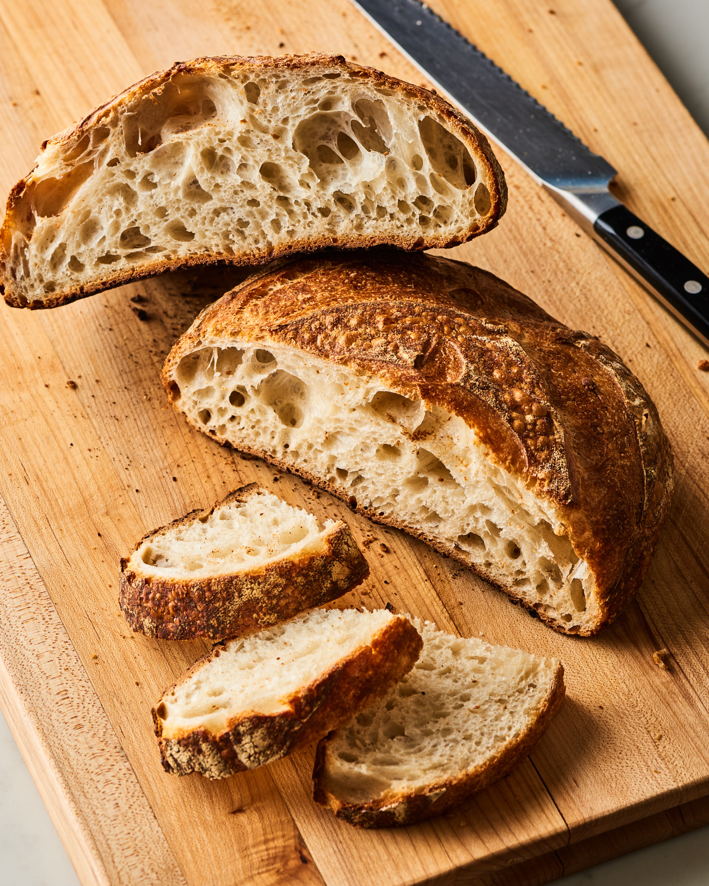

Home Page
Brown Bread

Sourdough Bread Recipe
This is a recipe that will enable you to easily bake some Sourdough bread.
Ingredients
- 700g strong white flour
- 500g strong white flour, plus extra for dusting
- 1 tsp fine salt
- 1 tbsp clear honey
- 300g sourdough starter
- flavourless oil, for greasing
Steps
- First, make your starter. In a large bowl, mix together 100g of the flour with 125ml slightly warm water.
Whisk together until smooth and lump-free.
- Transfer the starter to a large jar (a 1-litre Kilner jar is good) or a plastic container. Leave the jar or
container lid ajar for 1 hr or so in a warm place (around 25C is ideal), then seal and set aside for 24 hrs.
- For the next 6 days, you will need to ‘feed’ the starter. Each day, tip away half of the original starter, add an extra
100g of flour and 125ml slightly warm water, and stir well. Try to do this at the same time every day.
- After 3-4 days you should start to see bubbles appearing on the surface, and it will smell yeasty and a little acidic.
This is a good indicator that the starter is working.
- On day 7, the starter should be quite bubbly and smell much sweeter. It is now ready to be used in baking.
- Tip the flour, 225ml warm water, the salt, honey and the starter into a bowl, or a mixer fitted with a dough hook.
Stir with a wooden spoon, or on a slow setting in the machine, until combined – add extra flour if it’s too sticky
or a little extra warm water if it’s too dry.
- Tip onto a lightly floured surface and knead for 10 mins until soft and elastic – you should be able to stretch it
without it tearing. If you‘re using a mixer, turn up the speed a little and mix for 5 mins.
- Place the dough in a large, well-oiled bowl and cover. Leave in a warm place to rise for 3 hrs. You may not see much
movement, but don’t be disheartened, as sourdough takes much longer to rise than a conventional yeasted bread.
- Line a medium-sized bowl with a clean tea towel and flour it really well or, if you have a proving basket,
you can use this (see tips below). Tip the dough back onto your work surface and knead briefly to knock out any air bubbles.
Shape the dough into a smooth ball and dust it with flour.
- Place the dough, seam-side up, in the bowl or proving basket, cover loosely and leave at room
temperature until roughly doubled in size. The time it takes for your bread to rise will vary depending on the strength
of your starter and the temperature in the room, anywhere from 4-8 hrs. The best indicators are your eyes, so don’t worry
too much about timings here. You can also prove your bread overnight in the fridge. Remove it in the morning and let it
continue rising for another hour or 2 at room temperature. The slower the rise,
the deeper the flavour you will achieve.
- Place a large baking tray in the oven, and heat to 230C/210C fan/gas 8. Fill a small roasting tin with a
little water and place this in the bottom of the oven to create steam.
Remove the baking tray from the oven, sprinkle with flour, then carefully tip the risen dough onto the tray.
- Slash the top a few times with a sharp knife, if you like, then bake for 35-40 mins until golden brown.
It will sound hollow when tapped on the bottom. Leave to cool on a wire rack for 20 mins before serving.